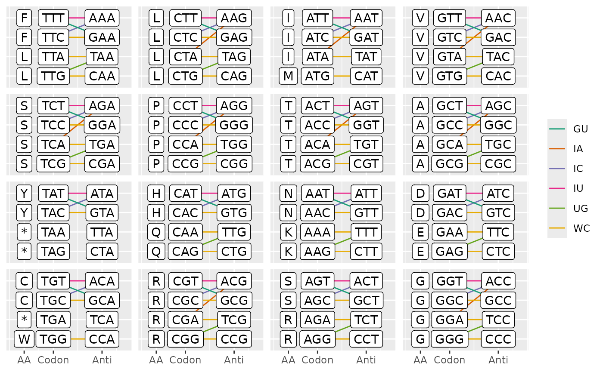
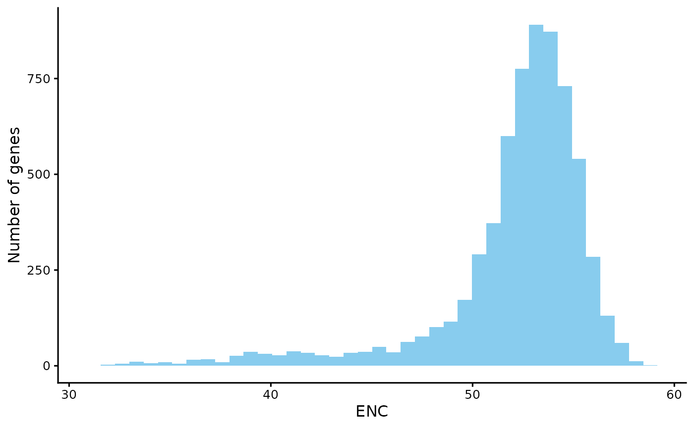
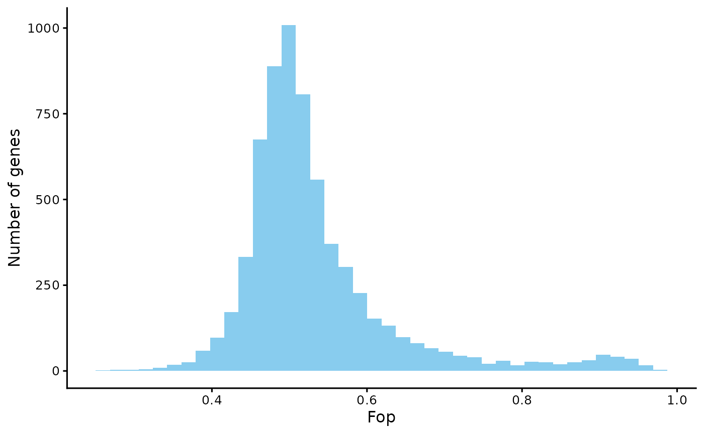
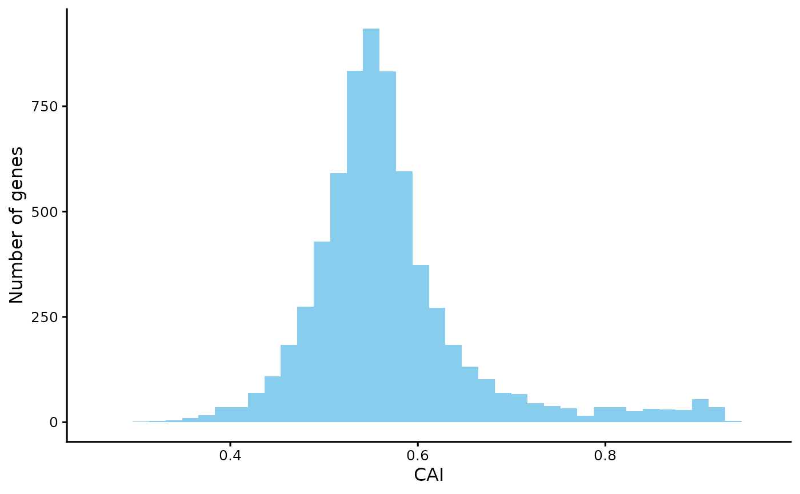
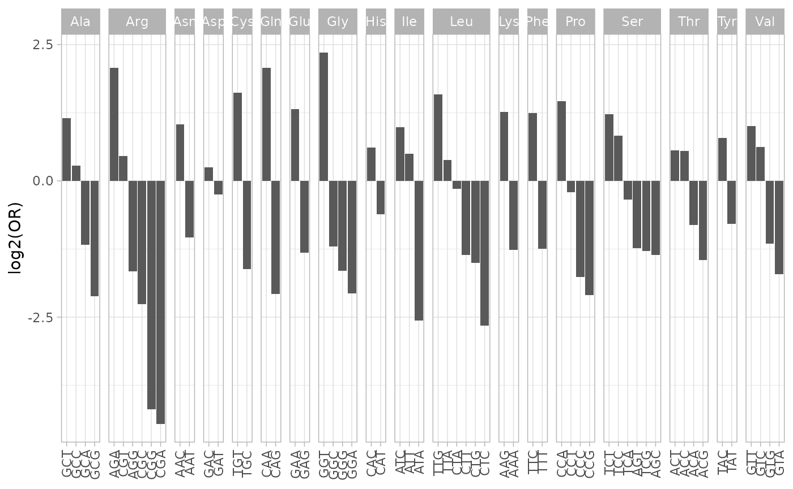
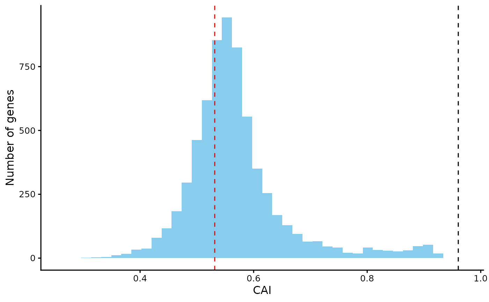
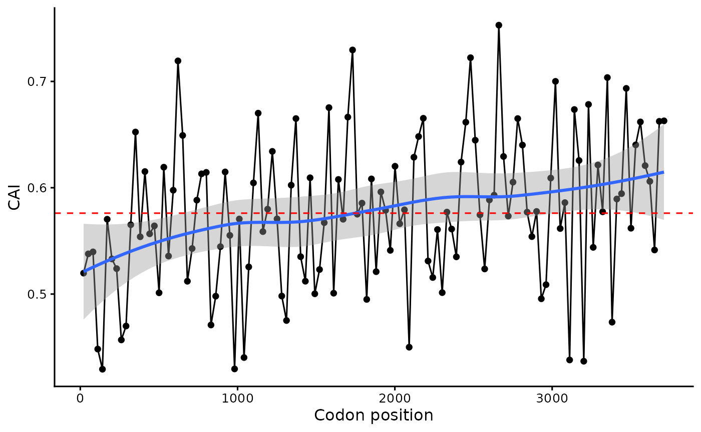

Codon usage bias is a phenomenon whereby different organisms exhibit distinct preferences for synonymous codons, which are multiple codons that encode the same amino acid. This variation in codon usage patterns is observed across all levels of life, from bacteria to eukaryotes. Codon usage bias is influenced by a variety of factors, including gene expression, GC content, and horizontal gene transfer. Understanding the causes and consequences of codon usage bias is important for a variety of fields, including molecular biology, evolutionary biology, and biotechnology.
cubar can be a helpful tool for researchers who are
interested in studying codon usage bias. It provides a variety of
functions that can be used to calculate and visualize codon usage bias
metrics.
Here, we demonstrate the basic functionalities of cubar
by analyzing the coding sequences (CDSs) of brewer’s yeast as an
example.
suppressPackageStartupMessages(library(Biostrings))
suppressPackageStartupMessages(library(data.table))
library(cubar)
library(ggplot2)Sequences and the Genetic Code
First, quality control was performed on the provided Yeast CDS
sequences to ensure that each sequence had the correct start codon, stop
codon, and no internal stop codons. Additionally, the length of each
sequence was verified to be a multiple of three. These QC procedures can
be adjusted based on the input sequences. For example, if your sequences
do not contain 3’ stop codons, you can skip this check by setting
check_stop = FALSE.
# example data
yeast_cds
#> DNAStringSet object of length 6600:
#> width seq names
#> [1] 471 ATGAGTTCCCGGTTTGCAAGAA...GATGTGGATATGGATGCGTAA YPL071C
#> [2] 432 ATGTCTAGATCTGGTGTTGCTG...AGAGGCGCTGGTTCTCATTAA YLL050C
#> [3] 2160 ATGTCTGGAATGGGTATTGCGA...GAGAGCCTTGCTGGAATATAG YMR172W
#> [4] 663 ATGTCAGCACCTGCTCAAAACA...GAAGACGATGCTGATTTATAA YOR185C
#> [5] 2478 ATGGATAACTTCAAAATTTACA...TATCAAAATGGCAGAAAATGA YLL032C
#> ... ... ...
#> [6596] 1902 ATGCCAGACAATCTATCATTAC...CACGAAAAGACTTTCATTTAA YBR021W
#> [6597] 138 ATGAGGGTTCTCCATGTTATGC...AAAAAAAAAAAAAAAAGATGA YDR320W-B
#> [6598] 360 ATGTTTATTCTAGCAGAGGTTT...AATGCCGCGCTGGACGATTAA YBR232C
#> [6599] 1704 ATGGCAAGCGAACAGTCCTCAC...TTCCCAAAGAGTTTTAATTGA YDL245C
#> [6600] 906 ATGTTGAATAGTTCAAGAAAAT...TACTCTTTTATCTTCAATTGA YBR024W
# qc
yeast_cds_qc <- check_cds(yeast_cds)
yeast_cds_qc
#> DNAStringSet object of length 6574:
#> width seq names
#> [1] 465 AGTTCCCGGTTTGCAAGAAGTA...ACTGATGTGGATATGGATGCG YPL071C
#> [2] 426 TCTAGATCTGGTGTTGCTGTTG...AGCAGAGGCGCTGGTTCTCAT YLL050C
#> [3] 2154 TCTGGAATGGGTATTGCGATTC...CAAGAGAGCCTTGCTGGAATA YMR172W
#> [4] 657 TCAGCACCTGCTCAAAACAATG...GATGAAGACGATGCTGATTTA YOR185C
#> [5] 2472 GATAACTTCAAAATTTACAGTA...AAATATCAAAATGGCAGAAAA YLL032C
#> ... ... ...
#> [6570] 1896 CCAGACAATCTATCATTACATT...GAACACGAAAAGACTTTCATT YBR021W
#> [6571] 132 AGGGTTCTCCATGTTATGCTTT...ATGAAAAAAAAAAAAAAAAGA YDR320W-B
#> [6572] 354 TTTATTCTAGCAGAGGTTTCGG...TTTAATGCCGCGCTGGACGAT YBR232C
#> [6573] 1698 GCAAGCGAACAGTCCTCACCAG...AAGTTCCCAAAGAGTTTTAAT YDL245C
#> [6574] 900 TTGAATAGTTCAAGAAAATATG...TGGTACTCTTTTATCTTCAAT YBR024WCDSs sequences can be convert to codon sequences by
seq_to_codons or translated to corresponding amino acid
sequences with translate from Biostrings.
# convert a CDS to codon sequence
seq_to_codons(yeast_cds_qc[['YDR320W-B']])
#> [1] "AGG" "GTT" "CTC" "CAT" "GTT" "ATG" "CTT" "TCT" "TTC" "CTA" "AAC" "TCA"
#> [13] "CTT" "CTT" "TTC" "CTC" "CCT" "ATC" "TGC" "TTT" "TGT" "TTA" "TTA" "CAG"
#> [25] "TTG" "AAG" "GCT" "ACT" "TGT" "GCC" "GTT" "CGT" "GTG" "AAA" "AAA" "TAC"
#> [37] "TCG" "ATG" "AAA" "AAA" "AAA" "AAA" "AAA" "AGA"
# convert a CDS to amino acid sequence
Biostrings::translate(yeast_cds_qc[['YDR320W-B']])
#> 44-letter AAString object
#> seq: RVLHVMLSFLNSLLFLPICFCLLQLKATCAVRVKKYSMKKKKKRMany codon usage metrics depend on codon frequencies, which can be
calculated easily by the function count_codons.
# get codon frequency
yeast_cf <- count_codons(yeast_cds_qc)In the resulting matrix, each row represents a gene, and each column represents a codon. The values in the matrix represent the frequency of each codon in the corresponding gene.
yeast_cf[1:3, 1:3]
#> AAA AAC AAG
#> YPL071C 10 4 5
#> YLL050C 6 3 5
#> YMR172W 16 37 25To interact with the genetic code, cubar provided a
helpful function to convert genetic code in Biostrings to a
handy table and an option to visualize possible codon-anticodon
pairing.
# get codon table for the standard genetic code
ctab <- get_codon_table(gcid = '1')
# plot possible codon and anticodon pairings
pairing <- ca_pairs(ctab, plot = TRUE)
plot_ca_pairs(ctab, pairing)
Alternatively, user can create a custom genetic code table by providing a mapping between amino acids and codons.
# example of a custom mapping
head(aa2codon)
#> amino_acid codon
#> 1 * TAA
#> 2 * TAG
#> 3 * TGA
#> 4 Ala GCT
#> 5 Ala GCC
#> 6 Ala GCA
# create a custom codon table
custom_ctab <- create_codon_table(aa2codon)
head(custom_ctab)
#> aa_code amino_acid codon subfam
#> <char> <char> <char> <char>
#> 1: * * TAA *_TA
#> 2: * * TAG *_TA
#> 3: * * TGA *_TG
#> 4: A Ala GCT Ala_GC
#> 5: A Ala GCC Ala_GC
#> 6: A Ala GCA Ala_GCCodon usage indices
Most indices can be calculate with get_* series
functions and the return value is usually a vector with value names
identical to the names of sequences. Here we demonstrate how to
calculate various indices with the above yeast CDS data.
Effective Number of Codons (ENC)
# get enc
enc <- get_enc(yeast_cf)
head(enc)
#> YPL071C YLL050C YMR172W YOR185C YLL032C YBR225W
#> 52.93616 44.57694 56.03833 50.82037 53.34254 53.85807
plot_dist <- function(x, xlab = 'values'){
x <- stack(x)
ggplot(x, aes(x = values)) +
geom_histogram(bins = 40, fill = '#88CCEE') +
labs(x = xlab, y = 'Number of genes') +
theme_classic(base_size = 12) +
theme(axis.text = element_text(color = 'black'))
}
plot_dist(enc, 'ENC')
Fraction of optimal codons (Fop)
# get fop
fop <- get_fop(yeast_cf)
plot_dist(fop, 'Fop')
cubar provides a method to determine the optimal (or
“preferred”) codon for each codon subfamily based on regression of codon
usage against scores for genes. Preferred codons are more likely to be
used in genes with high scores. Consequently, preferred codons will have
positive coefficients in the regression analysis. Users can provide a
vector of their own gene scores, for example,
log1p-transformed gene expression levels (RPKM or TPM). It
worthy noting that the order of gene scores should match the order of
genes in the codon frequency matrix. Otherwise, the results will be
meaningless. If gene scores were not provided, cubar will
use the opposite of ENC by default (so that genes with stronger codon
usage bias have larger scores).
To view the optimal codons, you can manually run the
est_optimal_codons function.
optimal_codons <- est_optimal_codons(yeast_cf, codon_table = ctab)
head(optimal_codons[optimal == TRUE])
#> aa_code amino_acid codon subfam coef pvalue qvalue
#> <char> <char> <char> <char> <num> <num> <num>
#> 1: A Ala GCT Ala_GC 0.08568964 0.000000e+00 0.000000e+00
#> 2: A Ala GCC Ala_GC 0.01832810 3.668732e-40 4.068957e-40
#> 3: R Arg AGA Arg_AG 0.12797761 0.000000e+00 0.000000e+00
#> 4: R Arg CGT Arg_CG 0.20166334 0.000000e+00 0.000000e+00
#> 5: N Asn AAC Asn_AA 0.05713515 8.995130e-298 1.770009e-297
#> 6: D Asp GAC Asp_GA 0.01870822 4.222671e-38 4.518999e-38
#> optimal
#> <lgcl>
#> 1: TRUE
#> 2: TRUE
#> 3: TRUE
#> 4: TRUE
#> 5: TRUE
#> 6: TRUECodon Adaptation Index (CAI)
# estimate RSCU of highly expressed genes
yeast_exp <- as.data.table(yeast_exp)
yeast_exp <- yeast_exp[gene_id %in% rownames(yeast_cf), ]
yeast_heg <- head(yeast_exp[order(-fpkm), ], n = 500)
rscu_heg <- est_rscu(yeast_cf[yeast_heg$gene_id, ], codon_table = ctab)
head(rscu_heg) # RSCU values are shown in the column `rscu`
#> aa_code amino_acid codon subfam cts prop w_cai rscu
#> <char> <char> <char> <char> <num> <num> <num> <num>
#> 1: F Phe TTT Phe_TT 2710 0.4013918 0.6705417 0.8027835
#> 2: F Phe TTC Phe_TT 4042 0.5986082 1.0000000 1.1972165
#> 3: L Leu TTA Leu_TT 3231 0.3234264 0.4780358 0.6468528
#> 4: L Leu TTG Leu_TT 6760 0.6765736 1.0000000 1.3531472
#> 5: S Ser TCT Ser_TC 4646 0.4897249 1.0000000 1.9588998
#> 6: S Ser TCC Ser_TC 2892 0.3048793 0.6225522 1.2195173
# calculate CAI of all genes
# note: CAI values are usually calculated based RSCU of highly expressed genes.
cai <- get_cai(yeast_cf, rscu = rscu_heg)
plot_dist(cai, xlab = 'CAI')
tRNA Adaptation Index (tAI)
# get tRNA gene copy number from GtRNADB
trna_gcn <- extract_trna_gcn(yeast_trna)
# calculate tRNA weight for each codon
trna_w <- est_trna_weight(trna_level = trna_gcn, codon_table = ctab)
# get tAI
tai <- get_tai(yeast_cf, trna_w = trna_w)
plot_dist(tai, 'tAI')Note that cubar has an internal copy of yeast_trna. You can also download mature tRNA sequences from the GtRNADB website (if you are lucky to have good internet connection) and read them into R using the following code:
# path_gtrnadb <- 'http://gtrnadb.ucsc.edu/genomes/eukaryota/Scere3/sacCer3-mature-tRNAs.fa'
# yeast_trna <- Biostrings::readRNAStringSet(path_gtrnadb)Indices that require additional data
The following table outlines indices those that can be derived directly from the sequence and those that require experimental data or databases to obtain their codon weights.
| Indice | whether need additional data | Additional data provided |
|---|---|---|
| ENC | no | - |
| GC | no | - |
| GC3s | no | - |
| GC4d | no | - |
| Fop | no | - |
| AAU | no | - |
| CAI | yes | gene expression level of highly expressed genes |
| tAI | yes | tRNA gene copy number of the species |
| CSCg | yes | RNA half life of the species |
| Dp | yes | tRNA gene copy number of the host genome |
Utilities
Test of differential usage
cubar provides a function to test for differential codon
usage between two sets of sequences. The function
codon_diff calculates the odds ratio and p-value for each
codon, comparing the usage in the two sets of sequences. The function
returns a data table with the results of the global, family, and
subfamily tests.
Here, we compare the codon usage of lowly expressed genes with highly expressed genes in yeast.
# get lowly expressed genes
yeast_leg <- head(yeast_exp[order(fpkm), ], n = 500)
yeast_leg <- yeast_leg[gene_id %in% rownames(yeast_cf), ]
# differetial usage test
du_test <- codon_diff(yeast_cds_qc[yeast_heg$gene_id], yeast_cds_qc[yeast_leg$gene_id])
du_test <- du_test[amino_acid != '*', ]The results of the differential usage test can be visualized using a bar plot of the odds ratios for each codon. Codons with odds ratios greater than 1 are used more frequently in the highly expressed genes, while codons with odds ratios less than 1 are used more frequently in the lowly expressed genes.
du_test$codon <- factor(du_test$codon, levels = du_test[order(-global_or), codon])
ggplot(du_test, aes(x = codon, y = log2(global_or))) +
geom_col() +
labs(x = NULL, y = 'log2(OR)') +
theme_classic(base_size = 12) +
theme(axis.text = element_text(color = 'black'),
axis.text.x = element_text(angle = 90, vjust = 0.5, hjust = 1))cubar also tests for differences in codon usage at the
family and subfamily levels.
du_test2 <- du_test[!amino_acid %in% c('Met', 'Trp'), ]
du_test2$codon <- factor(du_test2$codon, levels = du_test2[order(-fam_or), codon])
ggplot(du_test2, aes(x = codon, y = log2(fam_or))) +
geom_col() +
labs(x = NULL, y = 'log2(OR)') +
facet_grid(cols = vars(amino_acid), space = 'free', scales = 'free', drop = TRUE) +
theme_light() +
theme(axis.text.x = element_text(angle = 90, vjust = 0.5, hjust = 1))
Codon usage optimization
cubar provides a function to optimize codon usage for
heterologous expression. Here is an example of optimizing the codon
usage of the yeast gene YFR025C (HIS2) based on the optimal codons
calculated earlier.
# optimize codon usage to the optimal codon of each amino acid
opc_aa <- est_optimal_codons(yeast_cf, codon_table = ctab, level = 'amino_acid')
seq_optimized <- codon_optimize(yeast_cds_qc[['YFR025C']], optimal_codons, level = 'amino_acid')
# CAI before and after optimization
plot_dist(cai, 'CAI') +
geom_vline(xintercept = cai['YFR025C'], linetype = 'dashed', color = 'red') + # before
geom_vline(xintercept = get_cai(count_codons(seq_optimized), rscu_heg),
linetype = 'dashed', color = 'black') # after
Sliding-window analysis
cubar provides a function to perform a sliding-window
analysis of codon usage bias. This analysis can be useful for
identifying regions of a gene that exhibit distinct codon usage
patterns. Here, we demonstrate how to perform a sliding-window analysis
on YLR106C, one of the longest yeast genes.
swa <- slide_apply(yeast_cds_qc[['YHR099W']], .f = get_cai,
step = 30, before = 20, after = 20, rscu = rscu_heg)
# plot the results
slide_plot(swa, 'CAI')
FAQ
What do families and subfamilies mean in cubar? > A
codon family is the set of codons encoding the same amino acid. For a
large codon family that has more than four synonymous codons,
cubar will break it into two subfamilies depending on the
first two nucleotides of codons. For example, leucine is encoded by six
codons in the standard genetic code. cubar will break the
six codons into two subfamilies: Leu_UU for
UUA and UUG; Leu_CU for
CUU, CUC, CUA, and
CUG. Unless otherwise stated, codon weights for most
indices are calculated at the subfamily level. However, there are
options to estimate optimal codons and perform codon optimization at the
family level to suit different user needs.